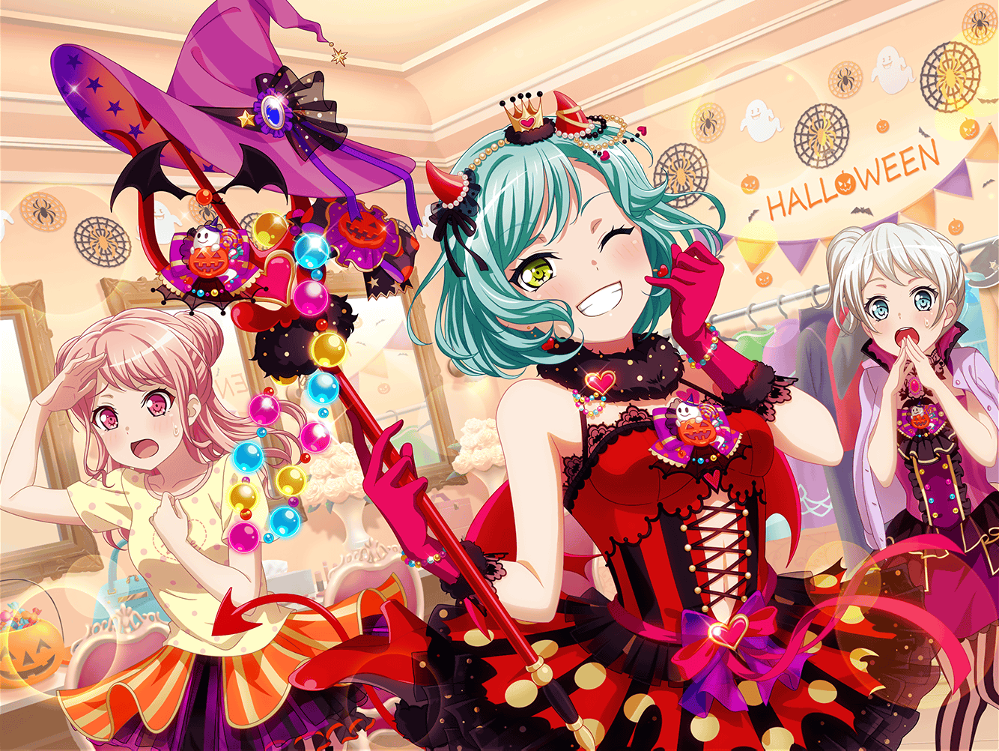

レッスンスタジオ
イヴ
おはようございますっ！
彩
おはようございまーっす！
……って、私とイヴちゃんが最後なんだ。
みんな早いね
千聖
…………
麻弥
…………
彩
え、なになに？ この空気なんなの？
イヴ
なにかの修行……ですか？
日菜
これで、全員揃ったよね。
実は、ちょっとみんなに聞いてもらいたいことがあってね
彩
ひ、日菜ちゃん……？
どうしたの急に？
イヴ
き、聞いてほしいこと……ですか？
日菜
実はあたし……
ヒナンティウス星からやって来た、
宇宙人なんだ！
イヴ
ひ、ひなん……？ え？ なんですか？
彩
な、何言ってるの？
日菜ちゃん、冗談はやめてよー
日菜
ごめんね、みんな。今まで秘密にしてて……
イヴ
ヒナさんが……宇宙人……？
日菜
あたしよく、るんっ♪ って言うでしょ？
あれはヒナンティウス星の言葉なんだ。
ヒナンティウス星ではみんな使ってるの
日菜
どうしてもこの言葉だけはクセで出てきちゃって……
彩
……また、そうやって私達をからかってー。
冗談でしょ？ ……え？ 千聖ちゃんも何か言ってよ……
千聖
……
彩
えっ……！？ ま、麻弥ちゃんは！？
麻弥ちゃんは信じてるの？
麻弥
日菜さんはおそらく……
本当のことを言っていると思います
彩
ま、麻弥ちゃん！？
日菜
麻弥ちゃん……信じてくれてありがとう
イヴ
ま、まさか天文部に入っているのも……
日菜
星を見るとね、おねーちゃんと一緒に過ごした
故郷を思い出せるから……
イヴ
も、もしかして……
サヨさんも宇宙人ということですか！？
日菜
うん……
いつか、またあの星に帰りたいな……
麻弥
日菜さんが星に帰ってしまうのは悲しいことですが……
ジブンになにかできることがあったら言ってください！
お手伝いしますから！
彩
えっ……！？
イヴ
私も協力します！！
彩
えーーっ！？
日菜
みんな、ありがとう……
彩
う、うそ……でしょ？
え？ うそ……じゃないの？
彩
（もしかして……
日菜ちゃんがなんでもできちゃうのって……
……宇宙人だったから？）
彩
ひ、日菜ちゃん……
わ、私にもできることがあれば――
千聖
そうはいかないわ
麻弥
ち、千聖さん！？
千聖
こうなったら私も真実を話さないといけないわね。
……私はね、とある組織から派遣されてきたエージェントなのよ
イヴ
エージェント……？
千聖
そう。地球を侵略しにきた宇宙人を捕獲して
それを阻止する組織……
千聖
パスパレに宇宙人が紛れ込んでいると情報を得て、
潜入していたの。彩ちゃん、今まで黙っていてごめんなさい
彩
そんな……！
イヴ
チサトさん……お願いします、ヒナさんを
見逃してもらえないでしょうか？ ヒナさんは大切な
パスパレの仲間なんです！
千聖
ごめんなさい。私はあくまで組織側の人間。
引き下がるわけにはいかないわ
千聖
でも、あなたを傷つけたくはない。おとなしく
投降すれば、手荒な真似はしないわ
彩
（どうしよう……！
このままじゃ日菜ちゃんが危険な目に……！）
日菜
ぷっ……！
千聖
ふふっ……！ ふふふっ……！
彩
ど、どうしたの二人とも？
日菜
あははははっ！ ダメだー、笑っちゃう！
千聖
ふふっ、日菜ちゃんも麻弥ちゃんも名演技だったわよ
彩
名演技？ ねえ、どういうこと！？
日菜
あはは、彩ちゃんごめんごめん！
実はさ、この前のハロウィンロケの時の麻弥ちゃんみたいに
あたしも仕掛け人やってみたくて
麻弥
日菜さんも千聖さんもそういうのお上手そうですよねって
話をしていたら、じゃあ実際にやってみよう、となりまして……
千聖
彩ちゃん、イヴちゃん、騙したりしてごめんなさい！
イヴ
そ、それでは、今までのは演技だったんですね！
よかったです……！ ヒナさんが捕まらなくて！
彩
はあ〜……もう、やめてよー！
日菜ちゃんと千聖ちゃんが戦い始めたらどうしようって
思っちゃったじゃんー！
イヴ
本当にお二人とも、とっても演技がお上手でした！！
日菜
ふっふっふー。
さーて今の話、どこまでが演技でどこまでがホントでしょーか？
彩
ええーっ！？
もうやめてよ日菜ちゃん〜〜！